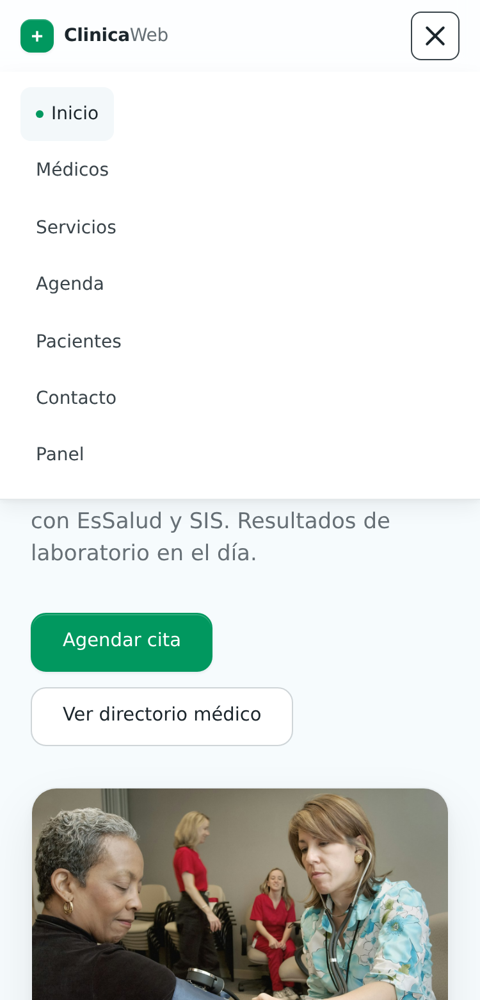
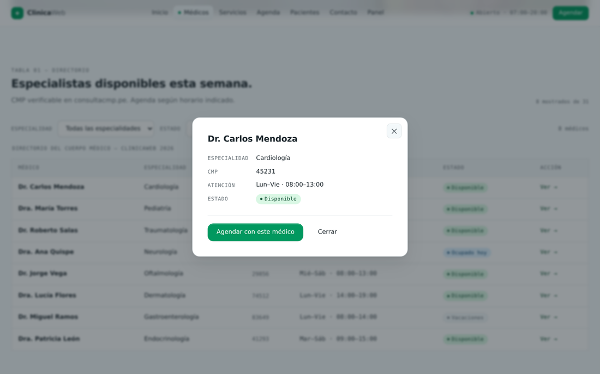
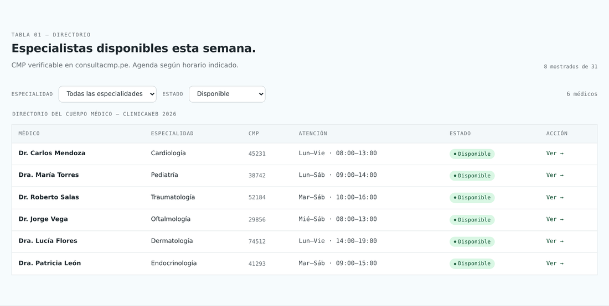
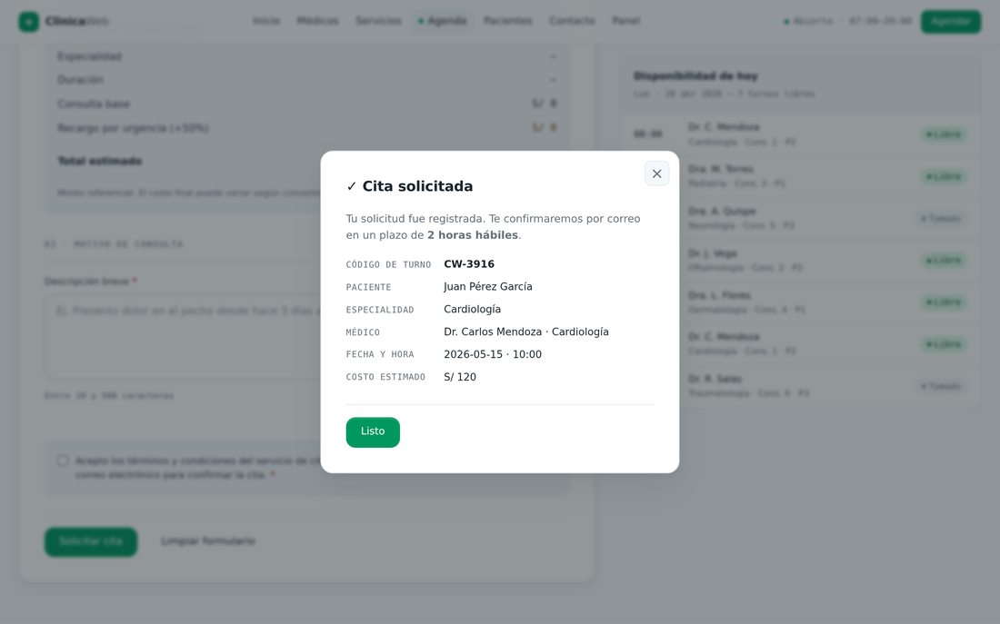
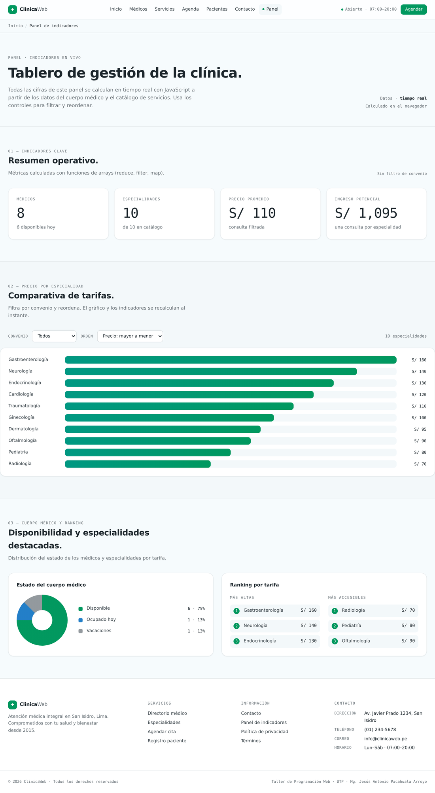
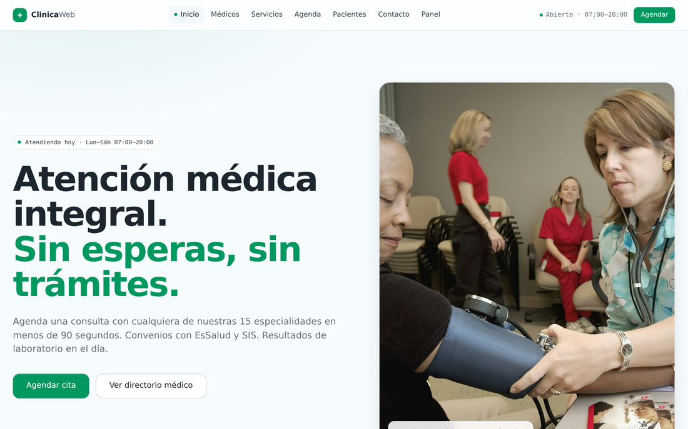
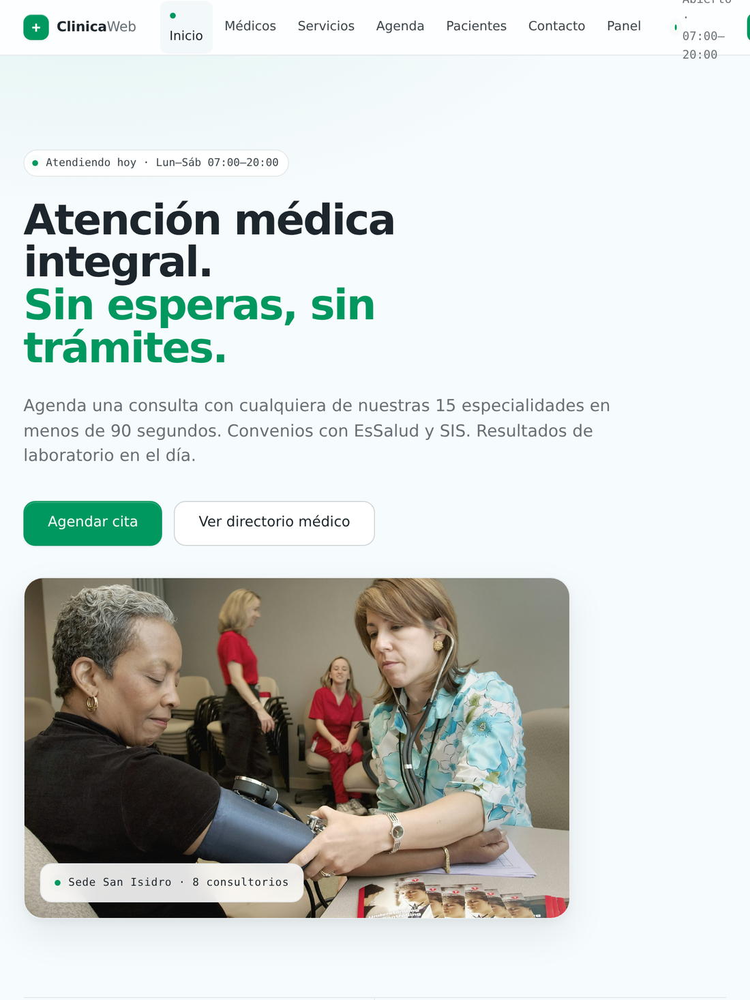
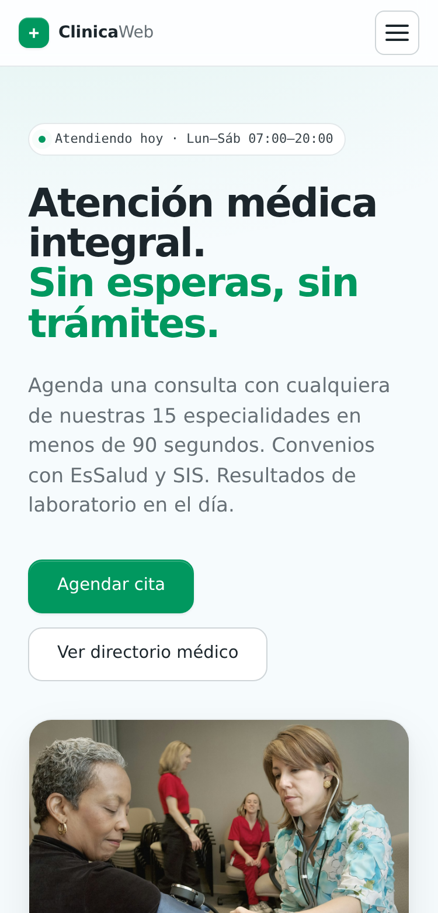

ClinicaWeb
Sitio web responsivo e interactivo para una clínica de servicios médicos. Construido con HTML5 + CSS3 + JavaScript, sin frameworks.
Las clínicas pequeñas no resuelven nada en línea.
- Información fragmentada: el paciente llama para saber médicos, precios y convenios.
- Sin canal de citas: todo por teléfono o WhatsApp, sin datos estructurados.
- Cuerpo médico no centralizado: no se puede verificar CMP ni horarios.
ClinicaWeb digitaliza estas tareas en un sitio estático en infraestructura, pero dinámico en el navegador.
Tres tecnologías, cero dependencias.
Sin React, sin build, sin librerías. Solo el estándar de la plataforma web — exactamente lo que evalúa el curso.
7 páginas + una capa JavaScript compartida.
Páginas de contenido
Inicio, directorio médico filtrable y catálogo con cotizador.
Formularios
Cita, registro y contacto con validación y calculadoras.
Panel de indicadores
Métricas calculadas en vivo desde los datos.
Comportamiento
data, ui, medicos, servicios, cita, registro, contacto, dashboard.
Una sola fuente de verdad.
Varios arreglos comparten el mismo índice: la posición i de cada uno describe al mismo médico. De aquí se alimentan tablas, filtros, calculadoras y dashboard.
const medNombres = ["Dr. Carlos Mendoza", "Dra. María Torres", ...]; const medEspNombre = ["Cardiología", "Pediatría", ...]; const medCmp = ["45231", "38742", ...]; // medNombres[i], medEspNombre[i], medCmp[i] → el MISMO médico i
Botón hamburguesa con mejora progresiva.
- El botón se inyecta por DOM y colapsa el menú en tablet y móvil (≤ 1024px).
- Se marca html.js: sin JavaScript, el menú sigue siendo usable.
- Animación de despliegue con @keyframes; el ícono se transforma en X.
Cubre el requisito: menú responsivo.

Un sistema de modales reutilizable.
- Funciones openModal() / closeModal() en todo el sitio.
- Cierre con tecla Escape, clic en el fondo o botón ✕.
- Aparición animada (desvanecimiento + escala) con @keyframes.
- Se usan para detalle de médico y confirmaciones.
Cubre el requisito: ventanas flotantes.

Las tablas se dibujan desde los arrays.
- Médicos: render con createElement + filtro por especialidad y estado.
- Servicios: catálogo filtrable por convenio y ordenable por precio.
- Funciones de arrays: filter, sort, forEach, map.
Cubre: manipulación del DOM y funciones de arrays.

Validación, cálculo y confirmación.
- Cita: validación JS + calculadora de costo (+50% urgencia).
- Registro: cálculo de edad e IMC.
- Contacto: contador de caracteres en vivo.
- Al enviar: preventDefault(), mensajes propios y modal.
Cubre el ítem 5: procesamiento de formularios.

Indicadores en tiempo real.
- KPIs con reduce: médicos, disponibles, promedio, ingreso.
- Gráfico de barras animado de precio por especialidad.
- Donut de estado con conic-gradient calculado en JS.
- Filtros que recalculan todo al instante.
Reúne arrays, funciones de arrays, eventos y DOM en una vista.

Una sola base, tres tamaños.



Flexbox y Grid con tres breakpoints. El menú colapsa en hamburguesa desde tablet hacia abajo (ítem 2).
Movimiento con propósito.
- Transiciones en botones, tarjetas y campos.
- @keyframes para modales, menú, pulso de estado y barras del dashboard.
- Respeta prefers-reduced-motion para accesibilidad.
Cubre el requisito: animaciones y transiciones CSS.
No lo decimos — lo probamos.
Pruebas automatizadas con jsdom: cargan cada página, ejecutan los scripts y verifican el DOM — render de tablas, filtros, cotizador (120+80=200), recargo (120→180), IMC (24.2), modales y métricas del dashboard. Todas pasan.
En línea, automático, en cada push.
- Desplegado en GitHub Pages vía GitHub Actions.
- 100% estático con rutas relativas — sirve sin configuración extra.
- Conserva Docker + Nginx para infraestructura propia.
Los 8 aspectos del desarrollo.
¿Preguntas?
ClinicaWeb — Taller de Programación Web · UTP · 2026.
Código y sitio en vivo: